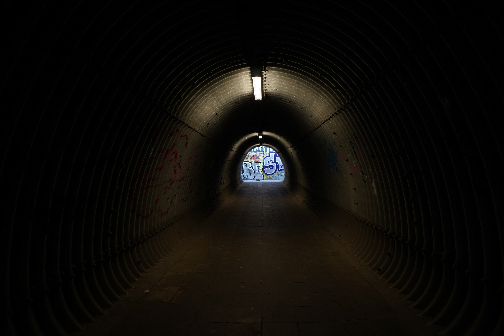
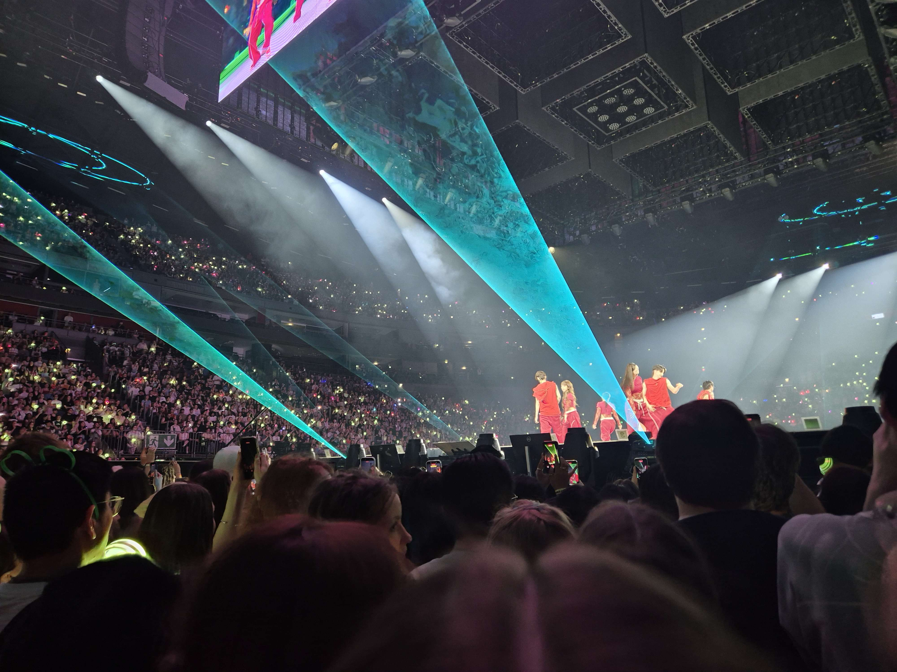
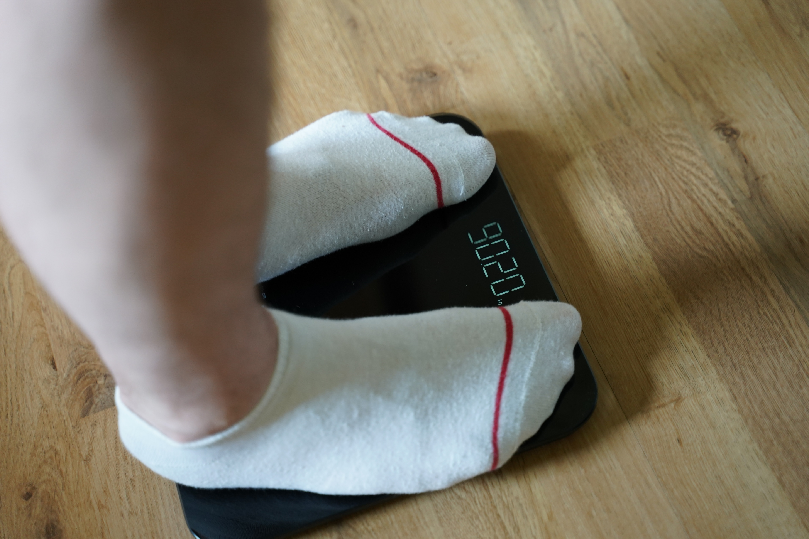
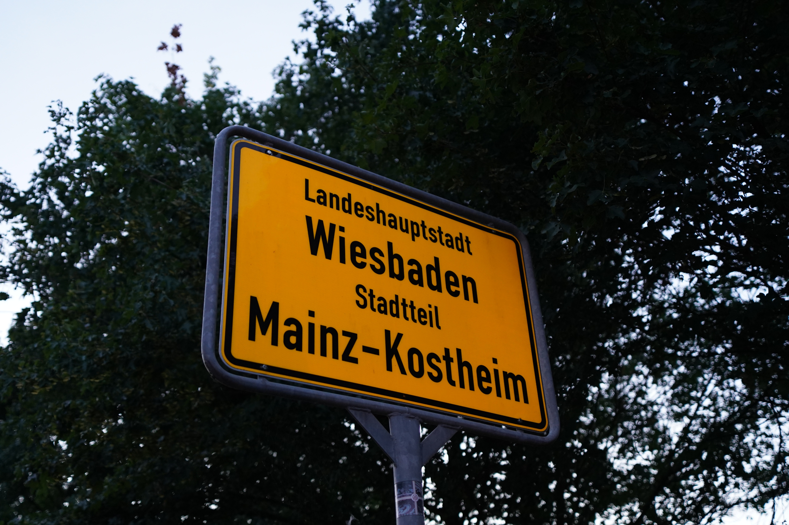
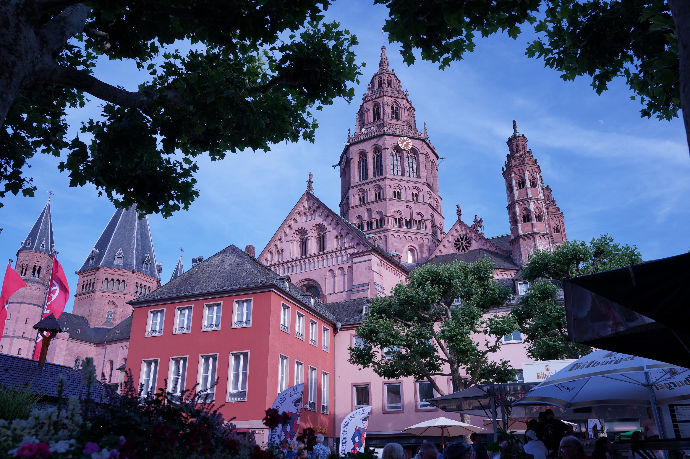
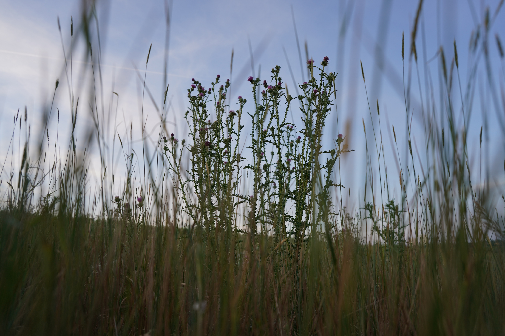

03
Tiefpunkt
CollapseManche Räume sind so leer, dass sie lauter schreien als jede Menge.


Ein Portfolio über Social Media & Identität
Fabio Cuccu · Vahdet Hodzic · Lukas Reis
Digitale Bildbearbeitung & Fotografierung · SoSe 26
Wir starren nach oben und vergessen, dass wir selbst leuchten könnten.

Im Spiegel sehen wir nie uns selbst — nur das, was andere aus uns gemacht haben.

Manche Räume sind so leer, dass sie lauter schreien als jede Menge.

Identität ist kein Fundament — sie ist ein Fluss, der sich seinen Weg sucht.


Heilen bedeutet nicht, ganz zu werden. Es bedeutet, das Gebrochene zu lieben.
